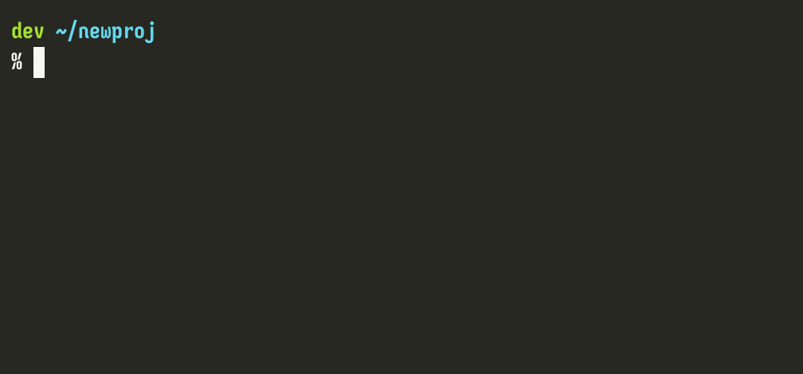

Run things from outside the venv
Let's create a small script in our project, which requires the venv to succeed:
% print -rl '#!/usr/bin/env python3' 'import bs4' 'print("SUCCESS")' >do_thing.py
% chmod +x do_thing.py
We can ensure we've got a proper environment and run it:
% envin
[venv] % ./do_thing.py

But what if we don't want to manually activate its environment?
[venv] % envout
% ./do_thing.py
Traceback (most recent call last):
File "~/newproj/do_thing.py", line 2, in <module>
import bs4
ModuleNotFoundError: No module named 'bs4'
vpy
% vpy do_thing.py
SUCCESS
By default, vpy does not activate the script's folder's venv;
it just uses that venv's Python.
This is usually good enough, and faster, than activating.
If it's not enough, you can pass --activate.
Either way, the current shell is unaffected.
For something similar and more flexible, see vrun below.
vpyshebang
% vpyshebang do_thing.py
#!/home/andy/.local/share/venvs/3f6372258375d0a2f18efd20d84fc2b5/venv/bin/python
#!/usr/bin/env python3
import bs4
print("SUCCESS")
The full path to the venv's interpreter has been prepended to the script in shebang form, so that it can be successfully called from anywhere.
If you find that unsightly, inflexible, or would just like vpy available outside of Zsh,
create a "standalone" vpy script:
% zpy mkbin vpy ~/.local/bin
Next time you use vpyshebang, it will use the path to that script, instead.
vrun
The minimal form of vrun is
% vrun <proj-dir> <cmd>...
The command passed will be run in a subshell
whose PATH is prepended with <proj-dir>'s associated <venv>/bin.
% vrun .. which python
This is much faster than activating and usually sufficient,
but you can pass --activate when you need to.
Passing --cd will run the command from within the project folder.
The current shell will remain unaffected.
vlauncher
You can use vlauncher to generate a small POSIX launcher script,
for running a command in a given project's activated venv:
% vlauncher ~/newproj 'which python' start.sh
#!/bin/sh -e
. /home/andy/.local/share/venvs/3f6372258375d0a2f18efd20d84fc2b5/venv/bin/activate
exec which python $@
If you pass --link-only, it will instead just create a symlink to <venv>/bin/<cmd>,
which should already have the venv's python in its shebang line.
Editor Settings
vpysublp will specify the venv interpreter associated with the current folder
in a new or existing Sublime Text project file.
vpypyright does the same in a new or existing Pyright settings file,
and vpyvscode in a new or existing [VS]Code settings file.